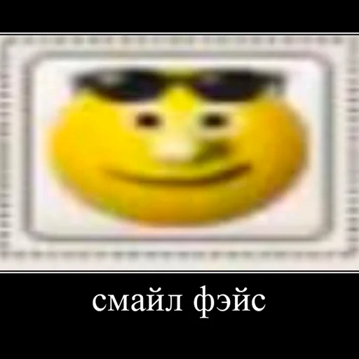
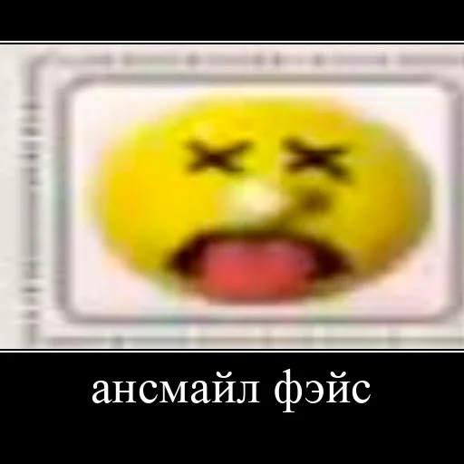

Обо мне
Мое имя Илья. Я Scull34 и Virise music
Мои любимые предметы
- Философия
- Физкультура
- 1С предмет люблю
Мои любимые фильмы, книги, книги, телепередачи на сегодня
(Обычно смотрю мало фильмов)
- Назад в будущее (Кинопоиск)
- Чебурашка
- Режиссёр
- Роман Качанов
- Страна
- СССР
- Дата выхода
- 06.06.1971
- Студия
- Союзмультфильм
- Жуль Верн. Путешествие к центру земли
Мои Эго

